Alumni
Celebrating the people who have contributed to the laboratory over the years.
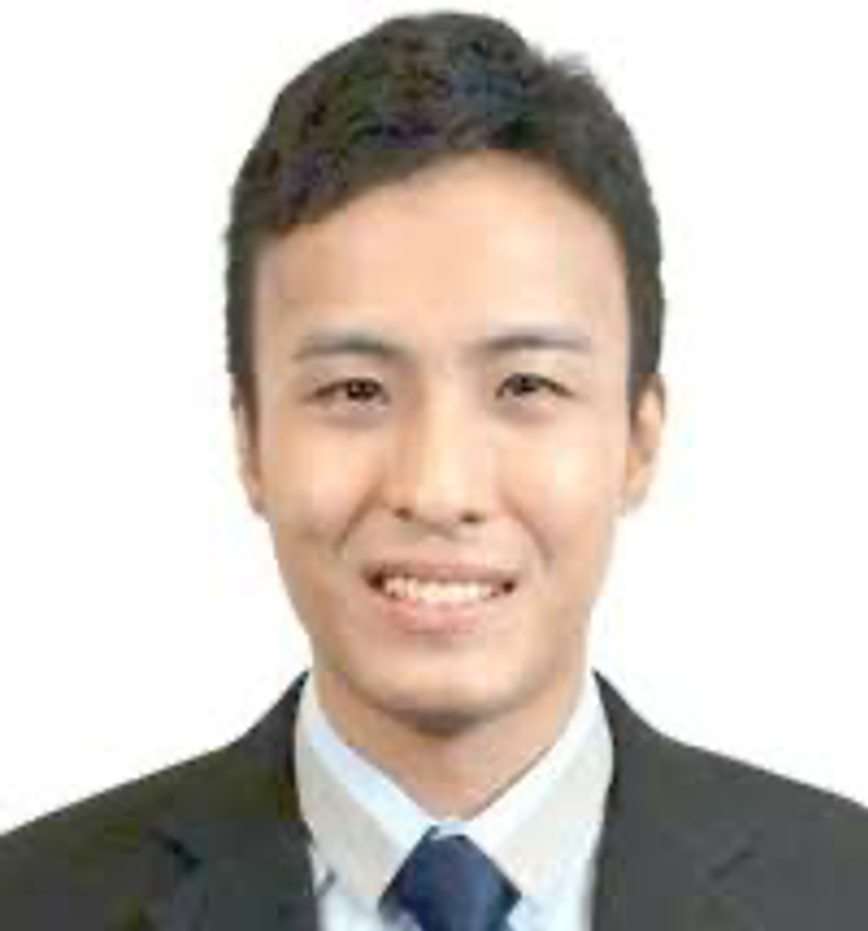
Ivor Russel Lee Ming Chong
Former laboratory member
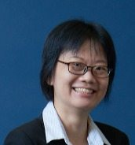
Tan Kai Soo
Former laboratory member
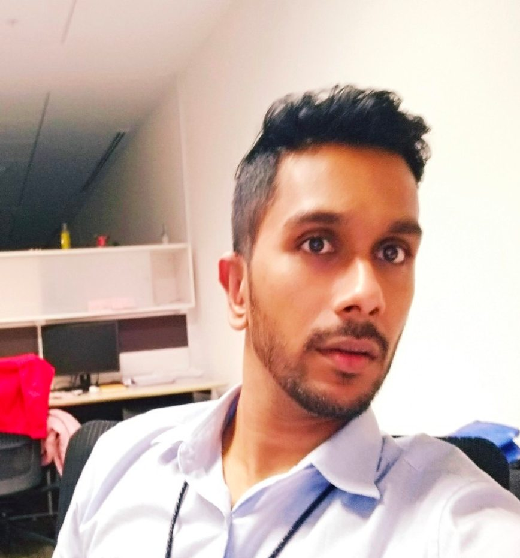
Akshamal M. Gamage
Former laboratory member
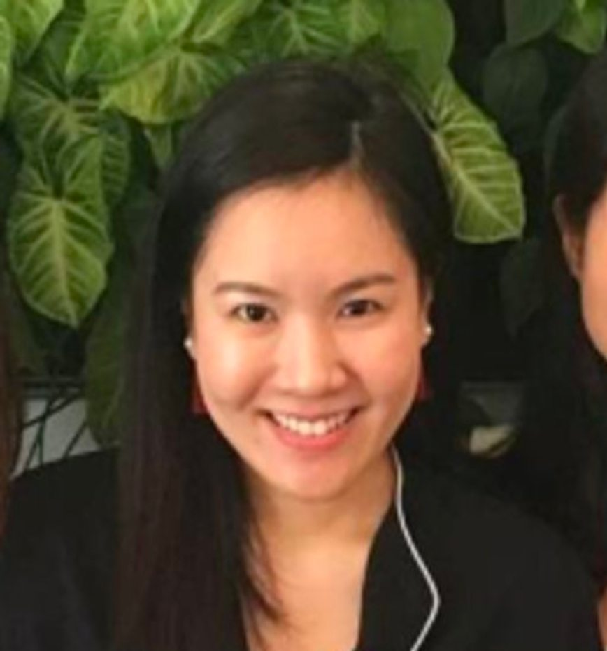
Hoh Chu Han
Former laboratory member
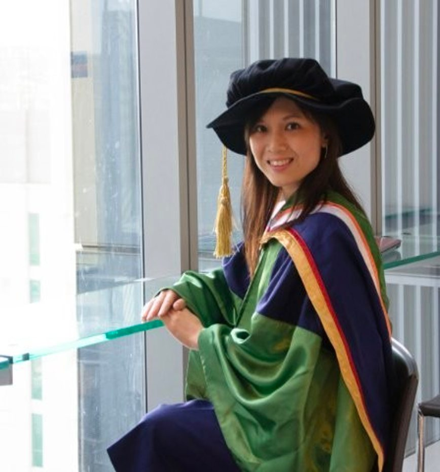
Jocelyn Wong
Former laboratory member
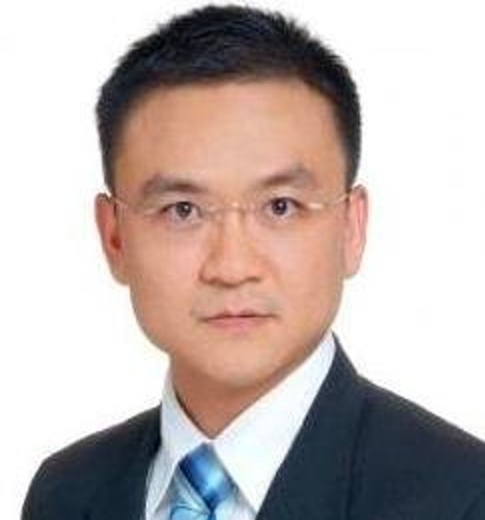
Koo Ghee Chong
Former laboratory member
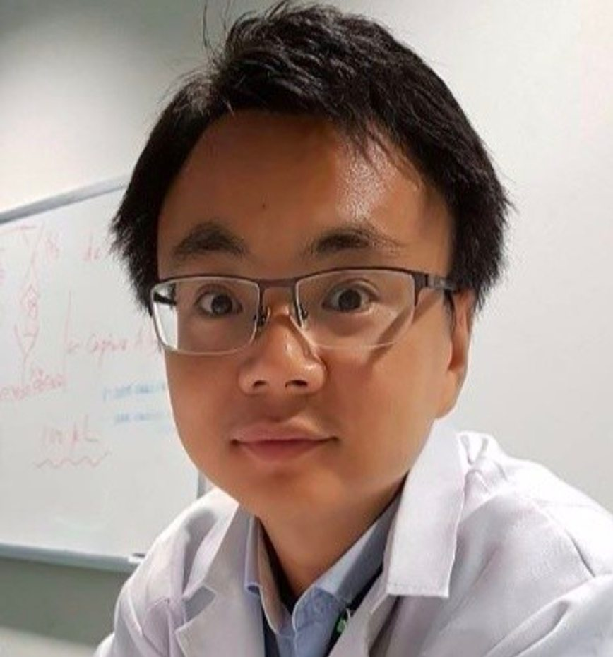
Sun Guang Wen
Former laboratory member
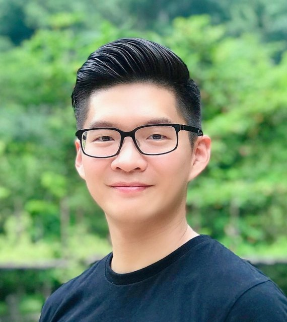
Teh Boon Eng
Former laboratory member
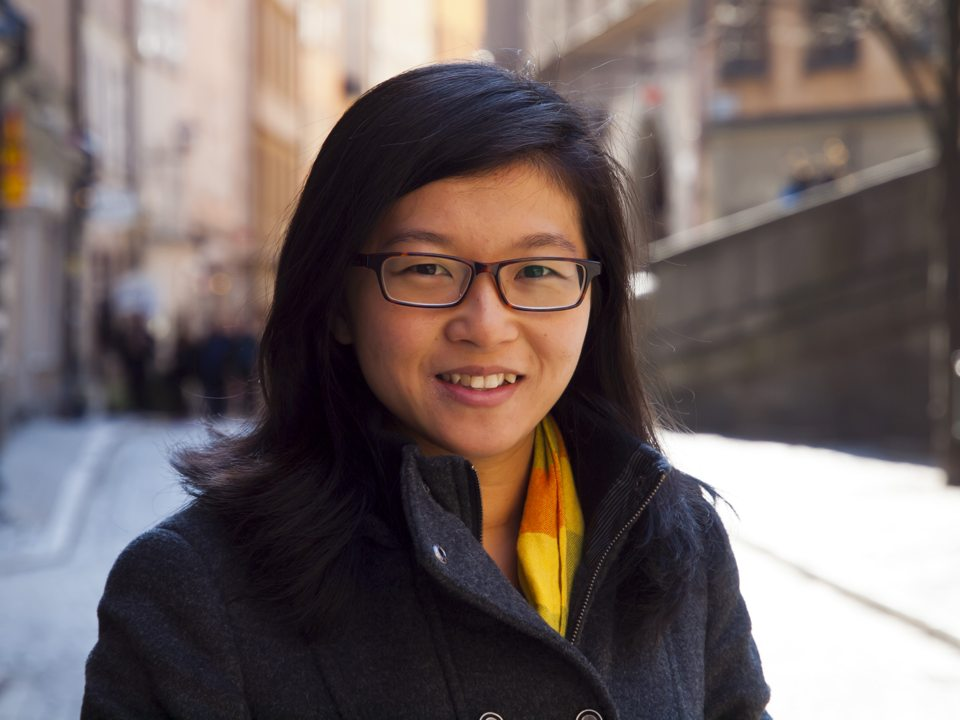
Lim Yan Ting
Former laboratory member
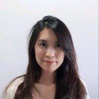
Joanne Ku Way Kay
Former laboratory member
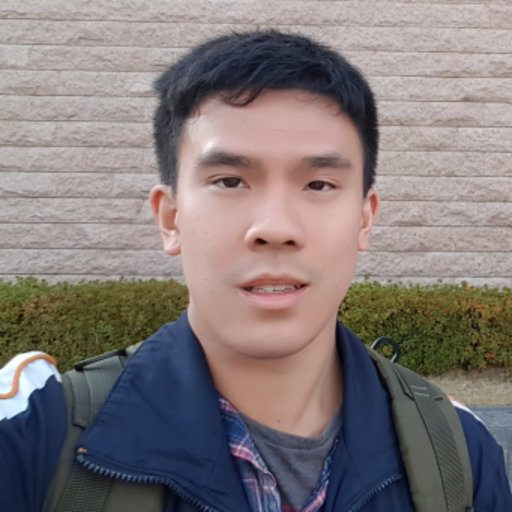
Daniel Lim Ruixiang
Former laboratory member
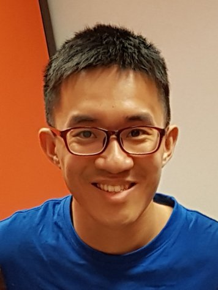
Wilson Chu Hon Weng
Former laboratory member
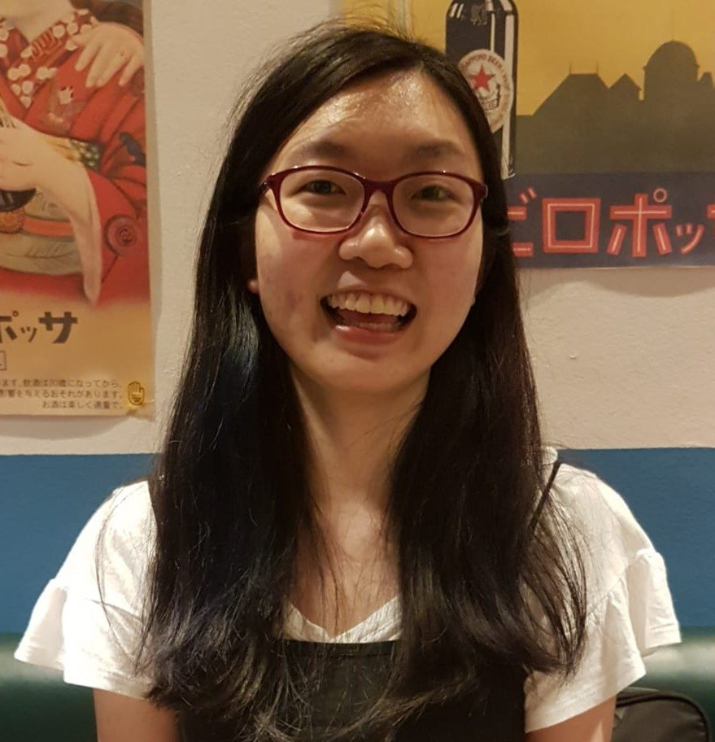
Tan Yi Han
Former laboratory member
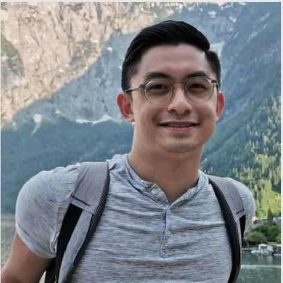
Goh Kwok Jian
Former laboratory member
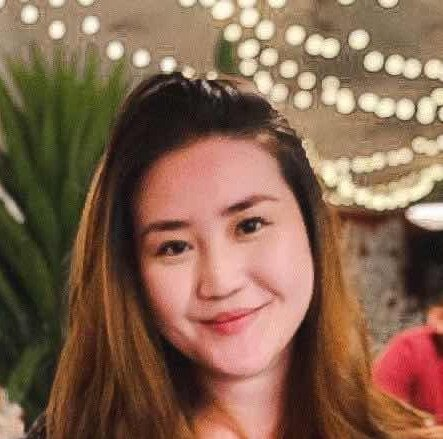
Chang Kai Chirng
Former laboratory member
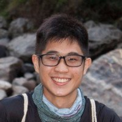
Oo Guodong
Former laboratory member
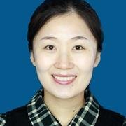
Ming Li
Former laboratory member
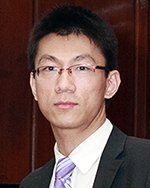
Chen Kang
Former laboratory member
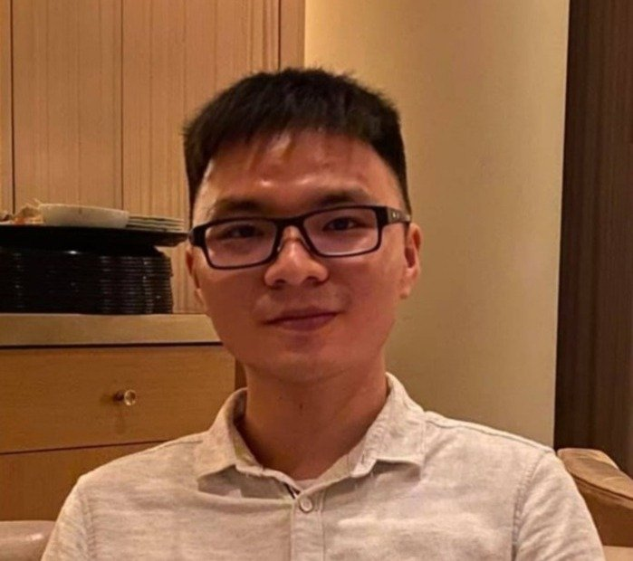
Melvin Yong
Alumnus · Research Scientist, Thermo Fisher Scientific
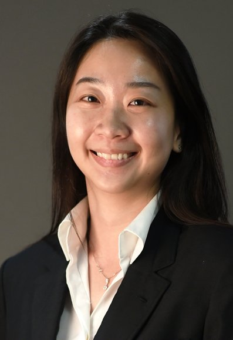
Cheryl Wang Yu Wei
Former laboratory member
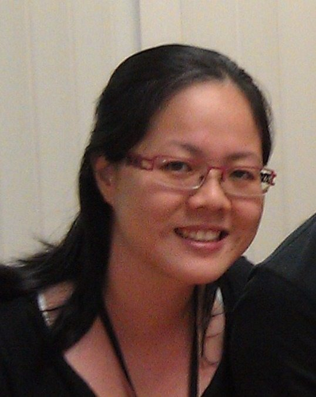
Isabelle Chen Gek Joo
Former laboratory member
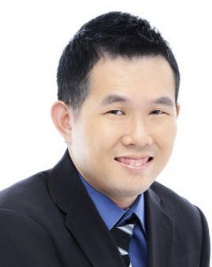
Low Kee Chung
Former laboratory member
Additional former members
- Hii Chung Shii (Ph.D.)
- Ng Kian Hong (M.Sc.)
- Lee Tien Huat (M.Sc.)
- Wang Lei (M.Sc.)
- Tan Boon Huei (M.Sc.)
- Liu Boping (M.Sc.)
- Cheryl Lee Mei Ling (M.Sc.)
- Lee Yian Hoon (M.Sc.)
- Ye Zhi Yong (Research Assistant)
- Ethel Sng Wei Qian (Research Assistant)
- Ng Hui Ling (Research Assistant)
- Ng Mei Ying (Research Assistant)
- Tan Si Yin (Research Assistant)
- Lim Soh Chan (Laboratory Manager)
- Mafer Seow Vui Yin (Laboratory Executive)
Visiting interns and exchange students
Lan Chi Nguyen · Maximillian Christoph Kohnen · Kim Diane Un · Jiang Ziyan · Yu Wei · Zheng Jialing
Former undergraduate students
Ang Wei Kang · Elijah Ong Wee Liang · Foo See Yee · Towhidur Rahman · Mike Lim · Channe Chwa · Aung Khant Soe · Shirmin Lim Zhi Yan · Lau Jing Yi Pearlyn · Jeff Cheng · Siah An Qi · Tan Si Yin · Ryan Lew Zhe Zhang · Goh Wei Rui · Oo Guodong · Valeria Barcelli Jo · Chuah You Heng · Chang Kai Chirng · Chang Yi Wei · Melvin Yong · Thor Wei Jie · Johanan Dravium Ponniah · Rhonda Chee Sin Ling · Ang Shi Hui · Melvin Soh · Azra Anwar Gaffoor · Daniel Lim Rui Xiang · Tan Yi Han · Miroshini D/O Kannathasan · Donald Ting Heng Rong · Leong Jia Hua · Jane Chua · Joanne Ku Wei Kay · Nazreen binti VM Abdul Muthaliff · Hoh Chu Han · Ng Mei Ying · Sharon Wong Sian Toong · Chew Zhan Hong Benjamin · Yee Xiao Jie · Cheung Hiu Tung · Vincent Oei Yi Sheng · Jocelyn Wong · Low Jingxian · Teh Boon Eng · Hu Huan · Zheng Simin · Bian Haosheng · Er Yu Seng · Wong Kok Loon · Li Ou · Ng Seng Kah · Chen Kang · Sun Guang Wen · Shirley Lui Shea Nee
Names preserved from the Wix archive; year-by-year graduation details and current appointments remain subject to review.